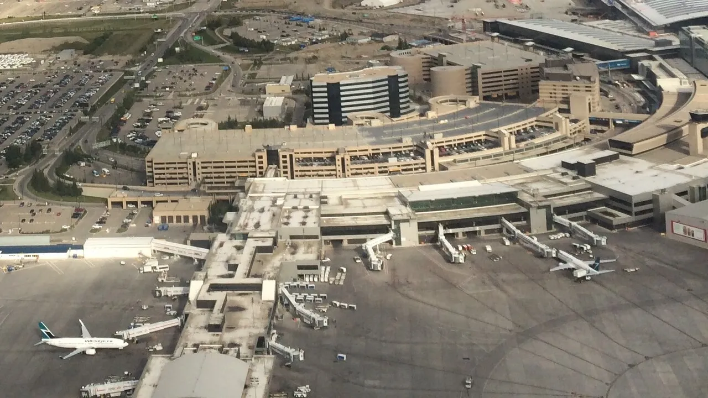
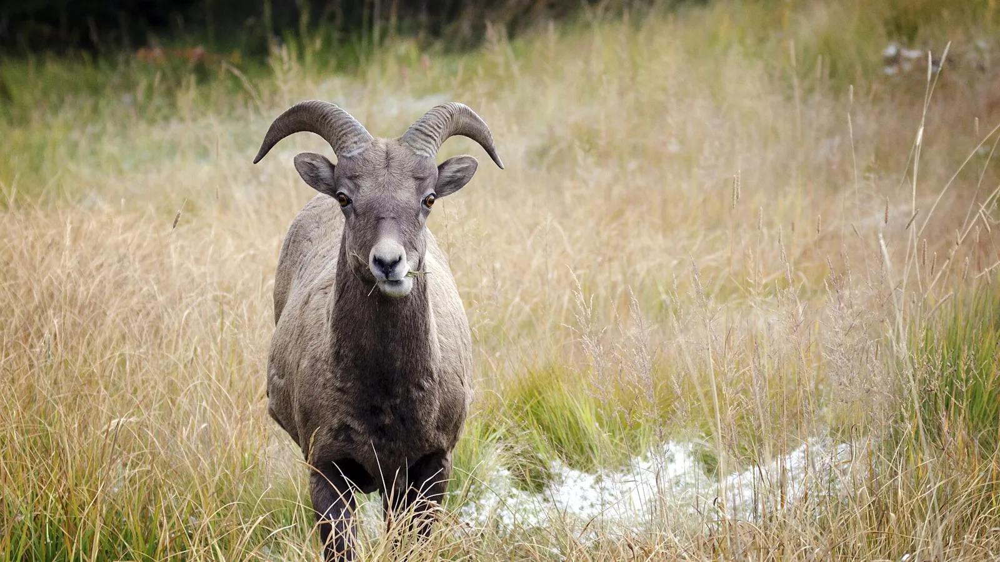
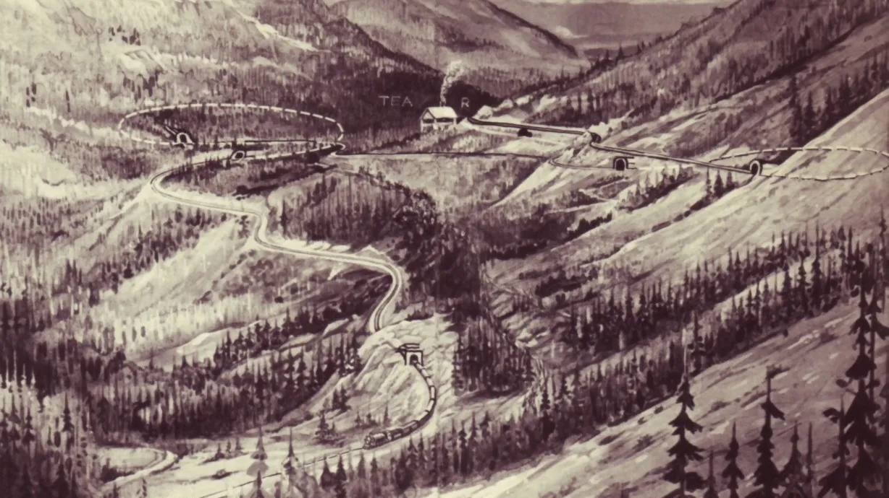
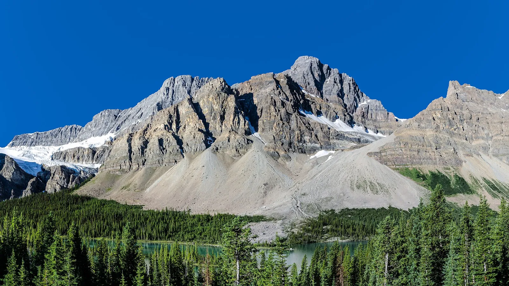
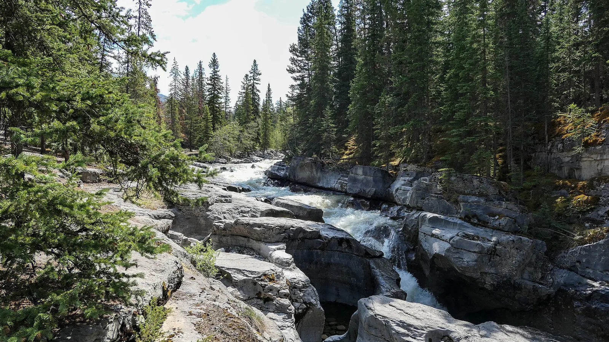
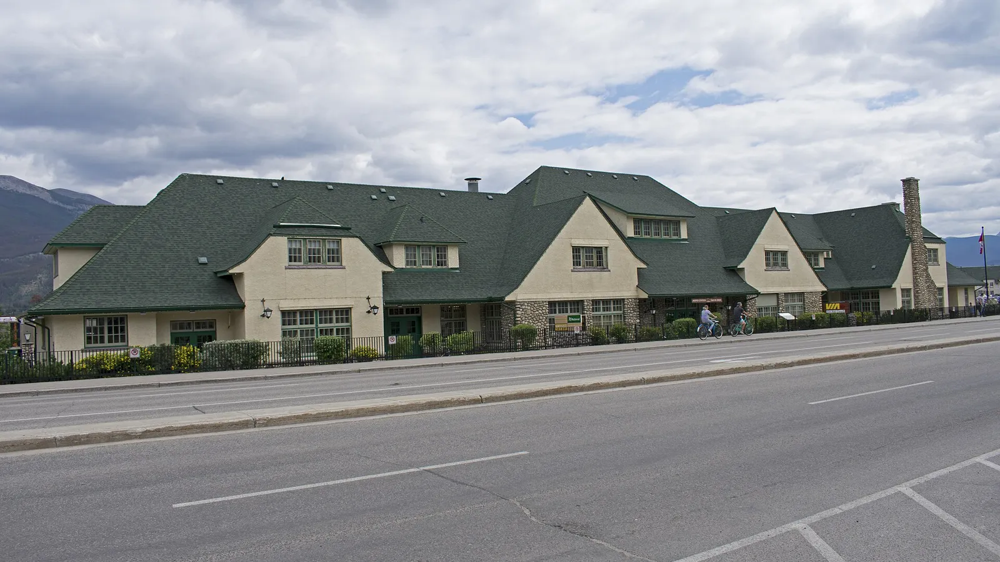
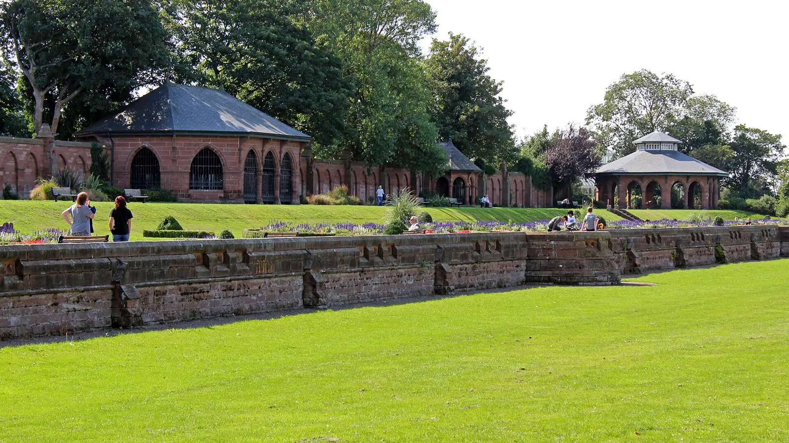
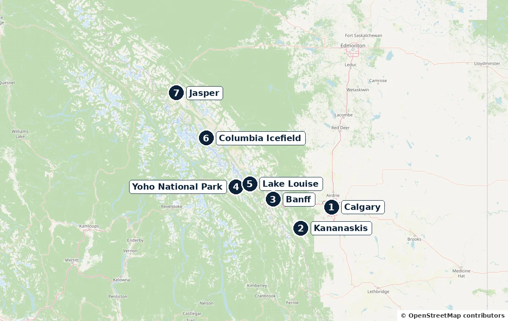

The Canadian Rockies at their best, ending with two days on the Rocky Mountaineer. A helicopter flight over the peaks of Kananaskis on the way to Banff, Yoho's Emerald Lake and a night at Lake Louise, the Icefields Parkway with a ride onto the Athabasca Glacier, two nights in Jasper, then the train through the Yellowhead Pass, past Mount Robson and down the Fraser Canyon to Vancouver, with a night in Kamloops between. The Rocky Mountaineer runs only from about mid-April to mid-October, travels by daylight, and overnights in Kamloops.
See it for yourself
Photos from the journey







Where you go
The journey on one map

CalgaryKananaskisBanffYoho National ParkLake LouiseColumbia IcefieldJasperKamloopsVancouver
Day by day, in short
Daily travel brief
Distances are by road for the whole day. The full plan with timings comes with your detailed itinerary.
-
1
-
2
Helicopter over Kananaskis and Banff sightseeing
Bow Falls Hoodoos Banff Lake Minnewanka
- Summit helicopter flight: flights are cancelled in bad weather; the cost is refunded.
- A Parks Canada pass is needed in the national parks; it is included.
-
3
Yoho National Park and Lake Louise
- Canoe rentals at Lake Louise sell out by mid-morning in summer.
-
4
The Icefields Parkway to Jasper
- Ice Explorer onto the Athabasca Glacier: warm jacket and closed shoes; the ice is slippery.
- Ice Explorer onto the Athabasca Glacier: stay inside the marked area: crevasses on the glacier are deadly.
-
5
Jasper National Park
- Jasper is a Dark Sky Preserve; stargazing is excellent late in the season.
-
6
Rocky Mountaineer: Jasper to Kamloops
- Board the Rocky Mountaineer: be at the station about 1 hour before departure; luggage goes ahead to the hotel.
- Pack an overnight bag; main luggage is delivered to your hotel.
-
7
Rocky Mountaineer: Kamloops to Vancouver
- Sit on the side the host suggests for each canyon.
-
8
Vancouver and departure
- Transfer to the airport: be at the airport 3 hours before an international flight.
- Add two nights in Vancouver for Whistler or Victoria.
Local know-how
Travel hacks from our desk
Hotel deposit
Use a credit card for the deposit or pre-authorisation at check-in, never a forex or debit card. Forex cards cannot hold funds, many hotels refuse them, and a credit-card hold is released faster.
Cards and cash
On card machines, always choose to pay in Canadian dollars, never in INR. Cards work everywhere. Tips of 15 to 20% are expected in restaurants and for guides.
Bears and wildlife
Black and grizzly bears, elk and bighorn sheep are often seen by the road. Stay in the vehicle, never feed wildlife, and keep at least 100 m from bears.
Mountain weather
It can snow in the Rockies even in July. Pack layers, a rain jacket and closed shoes.
When to go
Best time to visit for this journey
Late June to mid-September.
June to September for open roads, lakes free of ice and every tour running. The train runs from about mid-April to mid-October.
The package
What's included
Included
- 7 nights with breakfast
- Guided tours Calgary to Jasper as described
- Helicopter flight
- Banff Gondola
- Ice Explorer at the Columbia Icefield
- Rocky Mountaineer Jasper to Vancouver with meals on board and hotel in Kamloops
- 24/7 support from Blue Diamond Voyage
Not included
- International flights
- Canada visitor visa
- Lunches and dinners except on the train
- Optional activities
- Tips
- Travel insurance
The detailed itinerary
Some journeys are planned. Ours are crafted.
The full 8-day plan is ready: hour-by-hour timings, drive times, temple dress codes, food for your diet and a route map for every day. Tell us your dates and your city, and we'll send it to you on WhatsApp, shaped around you.
- Hour-by-hour timings
- A route map for every day
- Hotel and room details
- Visa and entry steps
- Vegetarian and Jain dining
24/7 travel desk+91 97148 59797+91 98242 21400
Photo and map credits
- Calgary International Airport: Thomas Woodtli, CC BY 2.0, via Wikimedia Commons
- Kananaskis: Jakub Fryš, CC BY-SA 4.0, via Wikimedia Commons
- Spiral Tunnels: Unknown photographer, Public domain, via Wikimedia Commons
- Bow Lake: Florian Fuchs, CC BY 3.0, via Wikimedia Commons
- Maligne Canyon: Mack Male from Edmonton, AB, Canada, CC BY-SA 2.0, via Wikimedia Commons
- Jasper railway station: Ymblanter, CC BY-SA 4.0, via Wikimedia Commons
- Kamloops: Kiyoteru Awaji, CC BY-SA 4.0, via Wikimedia Commons
- Stanley Park: Rodhullandemu, CC BY-SA 4.0, via Wikimedia Commons
- Maps: © OpenStreetMap contributors; road routes by OSRM.